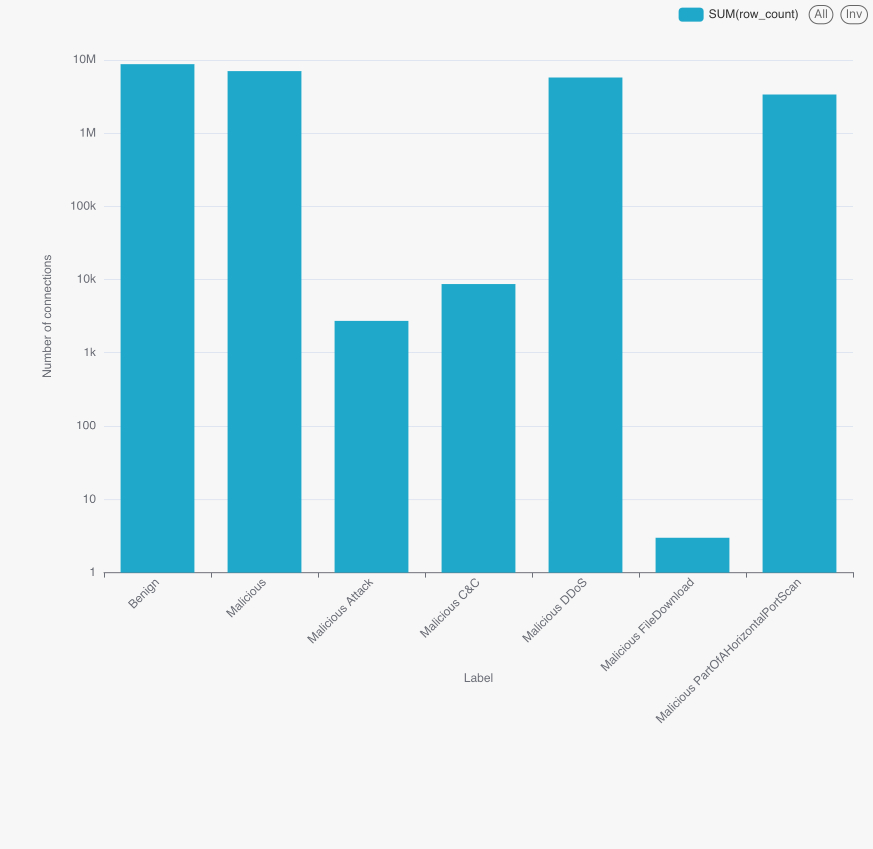
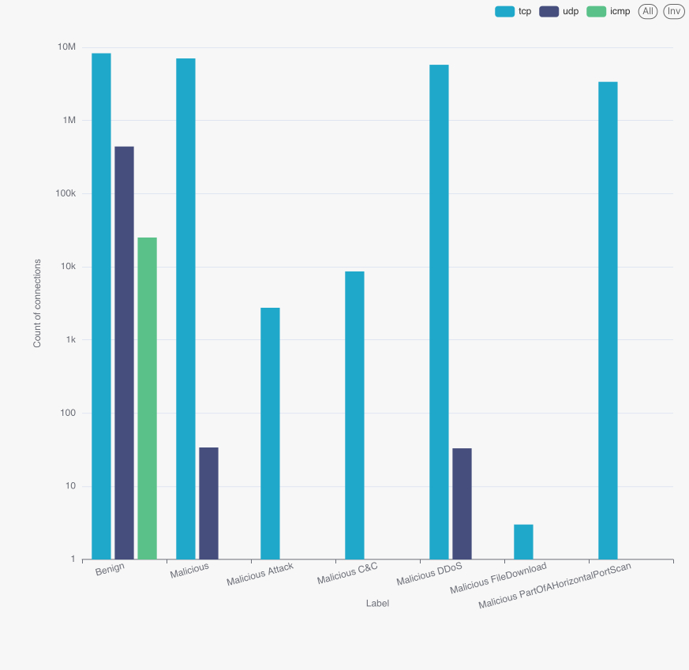
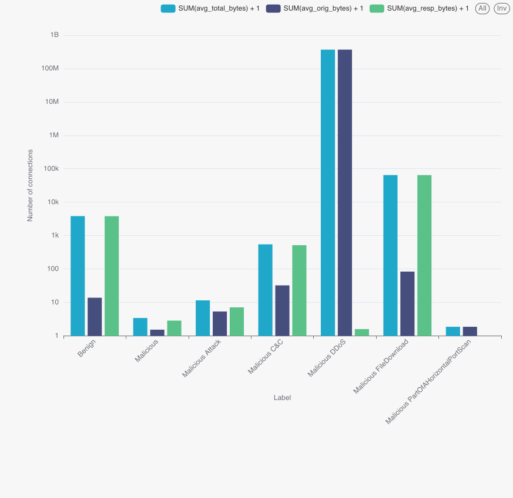
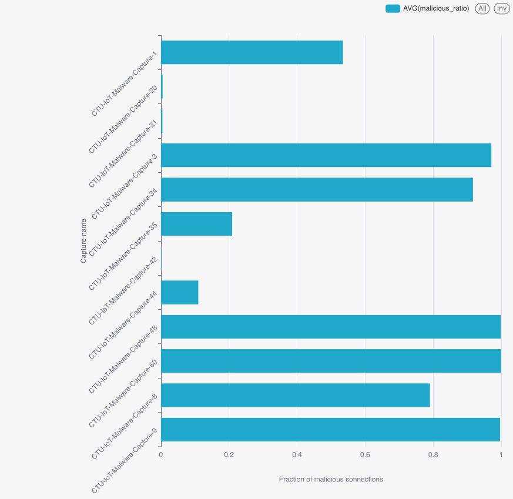
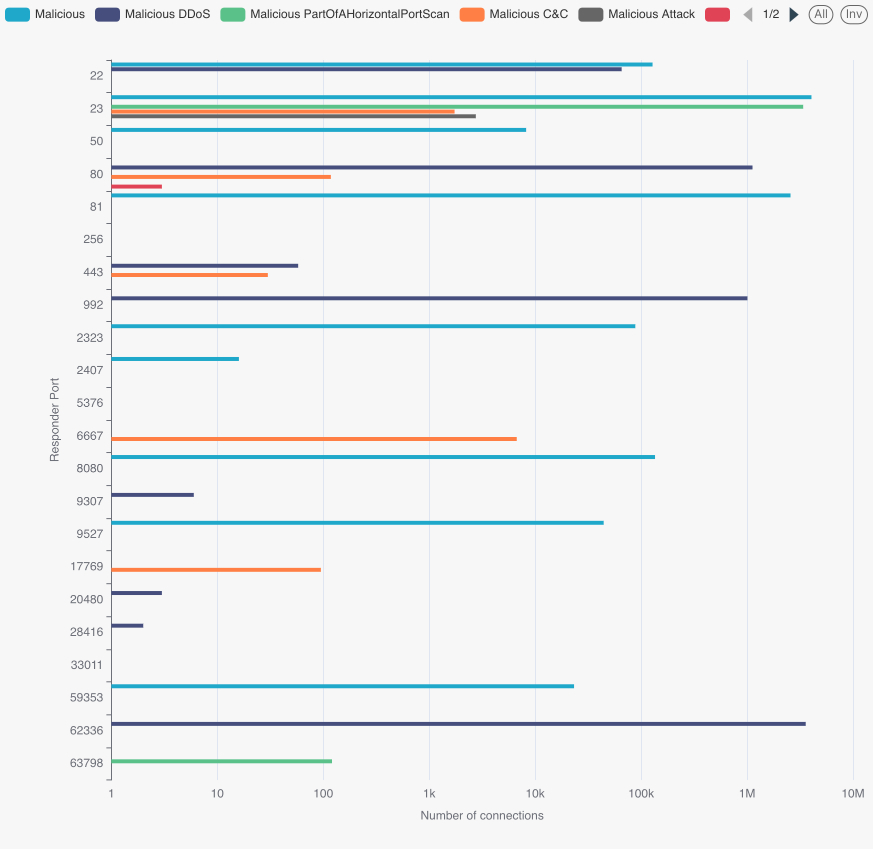

A Hadoop / Spark pipeline that ingests 25M Zeek records from PostgreSQL, partitions them in Hive, and trains distributed multiclass classifiers for seven malware behaviours.
Innopolis Hadoop · 3 nodes · YARN · Hive + Tez · Spark on YARN.
Python 3 · PySpark · Sqoop · Beeline · psycopg2 · Apache Superset.
Single entry point main.sh — every stage is idempotent and re-runnable.
12 selected captures of Mirai, Hide-and-Seek, Hakai, Torii, Trojan, Okiru, Kenjiro and benign baselines — converted to Zeek conn.log format with binary & multi-class malware labels.
Stage table stg_network_connections ingests raw text via COPY; type casts (inet, to_timestamp, regex-cleaned ints) happen in the SQL transform.
| Format | Codec | Write (s) | Scan (s) |
|---|---|---|---|
| parquet | snappy | 17.7 | 6.76 |
| parquet | gzip | 18.0 | 6.64 |
| avro | snappy | 17.0 | 9.32 |
| avro | bzip2 | 19.0 | 8.36 |
Parquet + Snappy chosen — best scan/throughput trade.
Single mapper avoids skew on the auto-incremented PK; UTC-formatted timestamps survive the round-trip.
Label is the dominant filter in EDA & ML — partitioning by it lets every analytic query prune to a fraction of the data.
7 EDA queries materialise qN_results Parquet tables and stream CSV exports through Beeline for the dashboard.
The corpus is neither balanced nor degenerate: 35% benign, 28% generic Malicious, 23% DDoS, 14% port-scan, plus three rare classes that the multiclass models still need to handle.


| Label | Dominant conn_state | Share |
|---|---|---|
| Benign | S0 (no reply) | 99.3% |
| Malicious | S0 | 99.7% |
| Malicious DDoS | OTH / RSTOS0 | 99.99% |
| Malicious C&C | S0 + S3 | 88% |
| Port scan | S0 | 100% |
A SYN-only flood (S0) is the universal signature — benign traffic on this network is dominated by IoT devices repeatedly failing to reach a server.

| Label | Avg orig pkts | Avg resp pkts |
|---|---|---|
| Benign | 3.90 | 0.006 |
| Malicious | 1.10 | 0.033 |
| Malicious DDoS | 48.10 | 0.0004 |
| C&C | 495.4 | 8.15 |
| Attack | 5.34 | 3.40 |
| Port scan | 4.00 | 0.00 |
Long-lived C&C sessions stand out: ~500 pkts out, with a real (8 pkt) reply — very different from one-shot scan or flood traffic.
8 of the 12 captures are > 79% malicious; 4 captures are < 11% malicious. There is no middle ground — each PCAP was deliberately recorded around a single behaviour.
| Capture | Total flows | Malicious ratio |
|---|---|---|
| Capture-60 | 3,581,028 | 99.9% |
| Capture-9 | 6,378,293 | 99.6% |
| Capture-48 | 3,394,338 | 99.9% |
| Capture-3 | 156,103 | 97.1% |
| Capture-1 | 1,008,748 | 53.5% |
| Capture-44 | 237 | 11.0% |
| Capture-20 / 21 / 42 | ~3,500 each | <1% |

Generic Malicious traffic (4M flows) and the entire port-scan class (3.4M flows) target Telnet (tcp/23) — the classic Mirai-family entry point. DDoS is bimodal between 62336 (Mirai-style C&C echo) and HTTP 80.
| Label | Port | Flows |
|---|---|---|
| Malicious | 23 | 4,055,327 |
| DDoS | 62336 | 3,578,391 |
| Port scan | 23 | 3,386,119 |
| Malicious | 81 | 2,571,979 |
| DDoS | 80 | 1,125,806 |
| DDoS | 992 | 1,008,351 |
| C&C | 6667 | 6,706 |

duration · orig_bytes · resp_bytes · missed_bytes · pkts (orig/resp) · ip_bytes · ports · year · local_orig · local_resp.
proto · service · conn_state · history — selected on training fold only to avoid leakage.
60% / 40% random split, seed = 42. Final train/test persisted as Parquet on HDFS for both training and evaluation.
Each spark-submit: 6 executors × 3 cores × 6 GB on YARN. Train data .persist(MEMORY_AND_DISK) to amortise CV folds.
| Hyperparameter | Best value |
|---|---|
| numTrees | 60 |
| maxDepth | 6 |
| impurity | gini |
| featureSubsetStrategy | auto |
| Hyperparameter | Best value |
|---|---|
| regParam | 0.01 |
| elasticNetParam | 0.0 |
| family | multinomial |
| maxIter | 50 |
Bagging captures non-linear thresholds in orig_pkts, id_resp_p and conn_state — signals the multinomial linear model cannot fit at this granularity.
| Model | Accuracy | Precision | Recall | F1 |
|---|---|---|---|---|
| Random Forest | 0.9979 | 0.9979 | 0.9979 | 0.9978 |
| Logistic Regression | 0.3510 | 0.3395 | 0.3510 | 0.1824 |
Metrics computed via PySpark MulticlassClassificationEvaluator; F1 weighted by class support.
RF reaches F1 = 0.998 on a 7-class, 25M-row problem — a 5.5× lift over a linear baseline at the same feature set.
Predictions persisted to HDFS as CSV (project/output/modelN_predictions/) and replayed by ml_evaluation.py — evaluator is decoupled from training.
Re-run main.sh on the cluster — every Hive result table and the evaluation CSV are rebuilt; the dashboard refreshes against them with no manual edits.
Capture-level bimodality (q4) is a real risk for row-level random splits — group-aware splitting per capture_id is the right next iteration. Logistic Regression underperformed because the decision boundary on conn_state + id_resp_p is sharply non-linear after one-hot.
Gradient-boosted trees · per-capture cross-validation · streaming variant via Spark Structured Streaming on the same Hive partitions · per-class precision/recall in the dashboard.
Big-data tools were the right hammer here — Hive partitioning + Spark CV made the 25M-row, 7-class job tractable on a 3-node cluster.
A Hadoop / Spark pipeline that turns 25 million raw IoT connections into a single, reproducible verdict — and a dashboard maintainers can actually read.